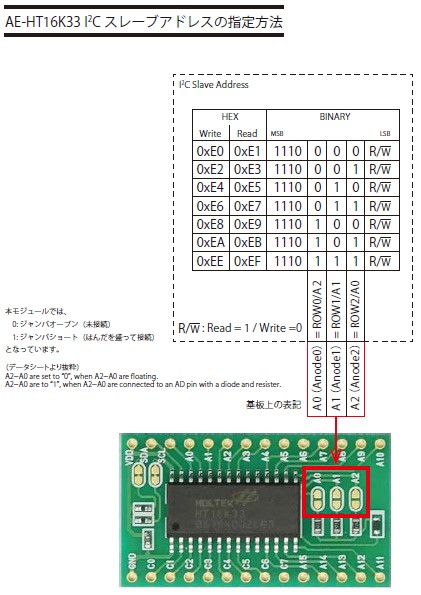
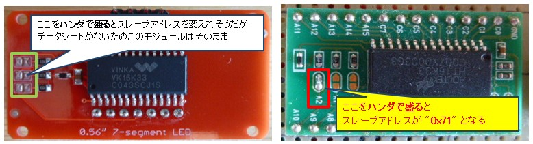
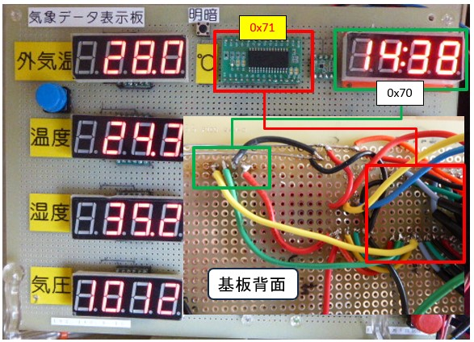
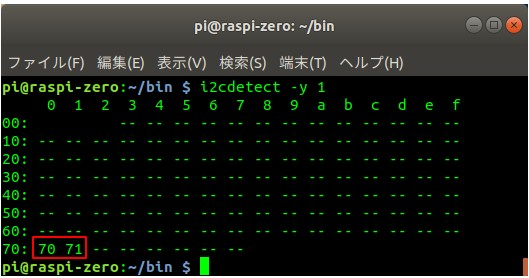

２つの同一種 i2cデバイス (HT16K33 モジュール)を共存させる
【最終更新日】2022-10-04
既存のHT16K33モジュール(左側)に中国製【0.56インチ LEDディスプレイモジュール 4桁 7セグメント VK16K33 I2C Arduino用】を共存させるにはいずれか一方のデバイスのスレーブアドレスを変更する必要があります。

気象データ表示板に組み込んだHTK1633モジュールは秋月電子の【AE-HT16K33 16x8マトリクスドライバモジュール】。
そして秋月電子からダウンロードした資料(PDF)がこれ。
そして秋月電子からダウンロードした資料(PDF)がこれ。
赤枠で括られた３つの端子の組み合わせでハンダを盛るとスレーブアドレスを0x71〜0x76に変更可能であることを表しています。

気象データ表示板のスレーブアドレスを変更するとすでに運用している制御プログラムを修正する必要があるため避けたかったのですが、中国製モジュールのデータシートが入手できなかったので今回は下記右側のように気象データ表示板のHT61K33モジュールのスレーブアドレスを "0x71" に変更することにしました。

実際に中国製7セグ4桁LEDモジュール (コロン付き) を気象データ表示板に組み込み、データの到着時刻(測定時刻)を出力したのがこれ。

コンソールからi2cデバイスのスレーブアドレスを確認。同種のI2Cデバイスのスレーブアドレスが想定通りに２つ表示されています。

複数のI2Cデバイスを連結する方法については下記書籍に記載されているのでご覧になってください。
電子部品ごとの制御を学べる！ Ｒａｓｂｅｒｒｙ Ｐｉ 電子工作 実践講座 改訂第２版 [ISBN978-4-8007-1242-4] 【2-5】デジタル通信方式(1) - I2C通信方式 -- 51ページ目
気象データ表示板の製作についてはこちら
https://github.com/pipito-yukio/home_weather_sensors/tree/master/raspi_zero
https://github.com/pipito-yukio/home_weather_sensors/tree/master/raspi_zero
気象データ表示板の制御プログラムのソースはこちら
- lib/ht16k33.py: HT16K33 モジュールの制御クラス
- lib/led4digit7seg.py: 4つの7セグ4桁LEDの出力を制御するクラス
- lib/timeled7seg.py: 時刻の出力を制御するクラス
- UDPClientFromWeatherSensor.py: 気象データ表示板の制御プログラム本体
import argparse
import time
from datetime import datetime
import pigpio
from log import logsetting
"""
コロン付き4桁7セグLEDに時刻を表示
"""
logger = logsetting.create_logger("main_app")
BUS_NUM = 1 # (1-1)
DIGIT = 5 # (1-2)
# 表示文字定義: ['0', '1', '2', '3', '4', '5', '6', '7', '8', '9', ':']
SEG_CHAR_MAP = { # (1-3)
'0': 0x3f, '1': 0x06, '2': 0x5b, '3': 0x4f, '4': 0x66,
'5': 0x6d, '6': 0x7d, '7': 0x07, '8': 0x7f, '9': 0x67,
':': 0x02
}
# [LED1] DIG1:COM0(0x00),DIG2:COM1(0x02),COLON:COM2(0x04),DIG3:COM3(0x06),DIG4:COM4(0x08) #(1-4)
REG_LED1 = 0x00 #(1-5)
def init(pi, slave_addr, bus_number=BUS_NUM):
global i2c_handle
# /dev/i2c-1
i2c_handle = pi.i2c_open(bus_number, slave_addr)
logger.info("i2c-handle: {}".format(i2c_handle))
# 初期設定 ※コマンドのみ
# System setup: Turn on System oscillator(発振器) [0x20 + 1(on)]
pi.i2c_write_byte(i2c_handle, 0x21)
# Display setup: Display on [0x80 + 1(on)]
pi.i2c_write_byte(i2c_handle, 0x81)
# Brightness: [0xe0 + f{1,1,1,1}]
pi.i2c_write_byte(i2c_handle, 0xe4) # ここの値を変えると明るさを変更できます
def read_memory(): # (2-1)
for m_addr in range(0x0f + 1):
r_data = pi.i2c_read_byte_data(i2c_handle, m_addr)
if debug_once:
logger.debug("r_data[{:#04x}]: {:#04x}".format(m_addr, r_data))
def clear_memory(): # (2-2)
for m_addr in range(0x0f + 1):
pi.i2c_write_byte_data(i2c_handle, m_addr, 0x00)
def cleanup(): # (2-3)
# Poweroffでもメモリーの値は残っている
clear_memory()
# Display setup: Display off
pi.i2c_write_byte(i2c_handle, 0x80)
# System setup: Turn on System oscillator off
pi.i2c_write_byte(i2c_handle, 0x20)
pi.i2c_close(i2c_handle)
def make_time(): # (3)
datas = [0] * DIGIT # (3-1)
str_time = datetime.today().strftime("%H:%M") # (3-2)
i = 0
for t in str_time:
datas[i] = SEG_CHAR_MAP[t] # (3-3)
i += 1
return datas
def print_time(): (4)
datas = make_time()
reg = REG_LED1 # (4-1)
for i in range(len(datas)):
val = datas[i] # (4-2)
pi.i2c_write_byte_data(i2c_handle, reg, val) # (4-3)
reg += 0x02 # (4-4)
if __name__ == '__main__':
global debug_once, i2c_slave_addr, pi
pi = pigpio.pi()
if not pi.connected:
logger.warning("pigpiod not stated!")
exit(0)
parser = argparse.ArgumentParser()
parser.add_argument("--i2c-address", type=str, default="0x70",
help="HT16K33 i2c address.")
args = parser.parse_args()
logger.info(args)
i2c_slave_addr = int(args.i2c_address, 0)
init(pi, i2c_slave_addr, BUS_NUM)
try:
debug_cnt, debug_once = 0, True
while True:
print_time()
read_memory()
debug_cnt += 1
debug_once = (debug_cnt < 2)
time.sleep(60) # ６０秒スリープ
except KeyboardInterrupt:
pass
except Exception as err:
raise err
finally:
cleanup()
logger.info("Finished!")